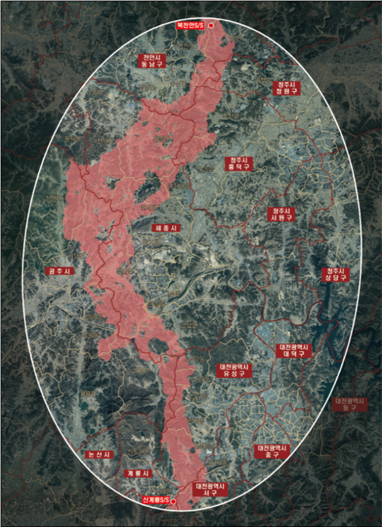

🏛️ 송전선로 길잡이
[ 큰글씨 ON ]
현재 단계 : 1단계 (최적경과대역)
⚡ 전압 등급: 345kV
1
최적경과대역
2
후보경과지 선정
3
최적경과지 결정
🎯
[345kV 송전선로 건설사업] 최적경과대역 확정
주소를 입력하시면 우리 집이 받을 수 있는 보상·지원 범위와 송전선까지의 거리를 지도에서 한눈에 확인하실 수 있습니다.
🔍 우리 집 기준 확정 노선 조회
검색
⚖️ 송주법(345kV 기준) 보상 및 지원 구역 안내
재산적 보상지역
~13m 이내
토지 소유자에 대한 재산선상 손실보상 대상
주택매수 등 청구지역
14m~60m
주택·대지 매수 청구 및 주거환경 개선 지원
주변지역 지원사업 대상
61m~700m
전기요금 보조 및 주민지원·복지사업
지원 범위 외
700m 초과
송주법상 법정 보상 및 지원 대상 제외
* 최외측 선선 평면 직선거리 기준 (본 사업은 345kV 송전선로 법정 기준이 적용됩니다)
🗺️ 최적경과대역 범위 지도

* 1단계 절차에 따라 최종 선정된 최적경과대역 광역 범위입니다.
🔔 다음 단계(후보경과지) 알림 신청하기
필수 신청
2단계 후보경과지 도출 및 설명회 개최 시 1:1 맞춤 문자/카톡 알림 수신
>
🗳️ 최적경과대역 관련 주민 의견 제출
>
🧮 우리 가구 법정 지원금 확인하기
>
🎬 송·변전설비 입지선정 안내 영상
투명하고 공정한 송전선로 입지선정 절차 및 주민 참여 과정을 영상을 통해 확인해 보세요.
▶ YouTube에서 영상 크게 보기
고객지원
🎧
1:1 상담 (AI 챗봇)
💬
자주 묻는 질문
📖
이용가이드
📞 자세한 직통 문의 사항
한국전력공사 전력망입지처
국가기간망 프로젝트 팀
📞 061-345-7373 전화 연결
📢 마을 주민 및 이웃과 공유하기
이웃 어르신 및 지역 주민분들께 최적경과대역 정보를 공유해 보세요.
✉️ 문자(SMS) 공유
💬 카톡 공유
🔗 링크 복사
Page 2 (2단계 후보경과지 선정) 보러가기 ▶
🗳️ 최적경과대역 주민 의견 제출
×
※ 작성해 주신 소중한 주민 의견은 입지선정위원회에 전달되어 차기 후보경과지 수립 시 주요 자료로 검토됩니다.
거주 지역 (읍/면/리)
의견 내용
의견 제출하기
🔔 2단계 진행 소식 맞춤 알림 신청
×
📢
지속적인 경과 안내 서비스
전화번호를 등록해 두시면, 향후
2단계 후보경과지 3가지 안 공개 및 주민 설명회 일정
을 가장 빠르게 카카오톡과 문자로 안내받으실 수 있습니다.
성함
휴대전화 번호 (필수)
알림 무료 신청 완료하기
🧮 법정 지원금 확인 안내
×
우리 가구 법정 지원금은 추후
3단계(최적경과지 결정)가 최종 완료된 이후
, 해당 경과지 기준(송주법)으로 대상 여부 및 지원 금액이 산정·확인됩니다.
🎧 1:1 상담 (AI 챗봇)
×
AI 챗봇:
안녕하세요! 최적경과대역 및 송전선로 건설 절차와 관련하여 궁금하신 점을 물어보세요.
전송
💬 자주 묻는 질문 (FAQ)
×
💡 질문을 누르시면 상세 답변을 확인하실 수 있습니다.
❓ 최적경과대역이란 무엇인가요?
송전선로가 통과할 수 있는 대략적인 광역 범위를 말하며, 입지선정위원회를 통해 선정됩니다. 이후 2단계에서 구체적인 후보경과지 노선들이 결정됩니다.
❓ '송주법'이 무엇인가요?
'송·변전설비 주변지역의 보상 및 지원에 관한 법률'
의 약칭입니다. 송전선로 주변지역 주민들의 생활환경 개선 및 지역발전을 위한 법정 지원 제도입니다.
❓ 지원금 대상 여부는 언제 결정되나요?
3단계(최적경과지 결정)에서 세부 노선 및 철탑 위치가 확정되면, 송주법 기준에 따라 가구별 지원 대상 및 금액이 결정됩니다.
❓ 전자파 영향은 안전한가요?
한국전력공사는 국제보건기구(WHO) 및 국내 환경 기준(83.3μT) 대비 매우 낮은
10% 이하 수준
으로 전자파를 안전하게 관리합니다.
📖 송전선로 길잡이 이용가이드
×
1. 주소 검색:
내 집 주소를 입력하여 확정 대역과의 거리를 확인하세요.
2. 알림 신청:
번호를 등록하시면 2단계 후보경과지 공개 시 문자를 드립니다.
3. 의견 제출:
대역 선정에 관한 주민 의견을 입지선정위원회에 전달할 수 있습니다.